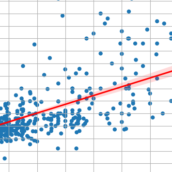
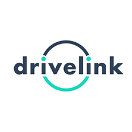
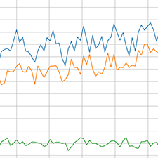
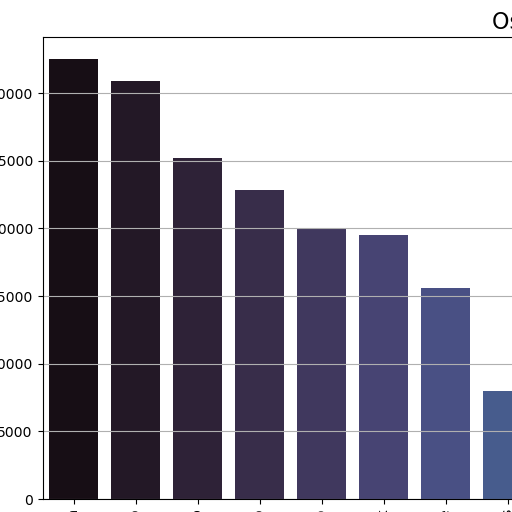
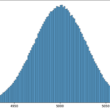
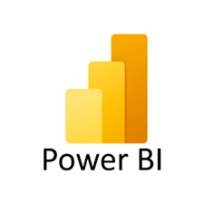

Agrobots
Description:
Proposed system for Global Solution 1st semester of FIAP 2023 to empower farmers by providing them with a powerful tool that optimizes agricultural management and increases productivity and quality of crops.
agronomy
artificial-intelligence
bot
bots
robots
See project
PySQLQuery
Description:
PySQLQuery is a simple-to-use Python package for generating SQL code using a pythonic style.
python
query
sql
sql-query
query-builder
See project

Apartments in Sao Paulo
Description:
Statistical study using Python on apartments for sale in the city of São Paulo. Analyzing various variables such as: price, area, nearest station, neighborhood, etc.
python
data-science
jupyter-notebook
statistics
See project

fast-encrypt
Description:
fast-encrypt is a comprehensive Python library that offers a variety of cryptographic methods to protect sensitive data simply and effectively.
encrypt
encryption
python
security
See project
Saúde Tech
Description:
Proposed system for Global Solution 2nd semester of FIAP 2023 to improve the efficiency of a patient's journey in medical matters, aiming from when the patient enters a healthcare facility to the diagnosis of exams and post-consultation.
aid
care
health
healthcare
See project

DriveLink
Description:
Proposed system for the BRQ Challenge of FIAP 2023 aiming to simplify the vehicle rental process, offering a digital platform to connect owners of light and heavy vehicles with companies and individuals interested in renting these vehicles.
car
cars
rent
See project

Suicídios no Brasil
Description:
Statistical analysis of suicides that occurred in Brazil from 2010 to 2019.
python
data-science
jupyter-notebook
statistics
See project
FrigattoPay
Description:
Financial system with expense, revenue, and account management proposed as an activity for FIAP.
fintech
java
web
website
See project
Frigattos
Description:
Intuitive and user-friendly SCSS library to help you write your stylesheets.
front-end
library
sass
scss
web
See project
Solar system
Description:
Solar system implemented in HTML and CSS, containing the sun, the planets (until Neptune) and asteroid belt.
css
design
font-end
html
planet
sass
scss
sun
system
See project

Data analysis with SQL
Description:
Repository related to the content taught in the course "Python: Data Analysis with SQL" by Alura.
python
data-science
jupyter-notebook
statistics
See project
Walking manager
Description:
System to manage your exercise by offering statistics and information about your walks.
python
data-science
system
exercise
See project

Sum of random numbers
Description:
Statistical study on the sum of random numbers.
python
data-science
jupyter-notebook
statistics
See project
Windows 10 Desktop Clone
Description:
Windows 10 desktop clone implemented in HTML, CSS and JavaScript.
desktop
html
javascript
js
microsoft
scss
windows
See project

PowerBI Formation Alura
Description:
The content covered in all courses in the Power BI Formation by Alura.
data-science
plot
powerbi
statistics
See project
Credit card form
Description:
Form for validating and registering Amex, Discover, Maestro, Mastercard and Visa credit cards.
css
form
front-end
html
javascript
See project